Колье, чокеры и сотуары
Колье и чокеры ручной работы из натуральных камней, жемчуга и майорки: от тонкого жемчужного чокера до смелого сотуара. В разделе: 23.
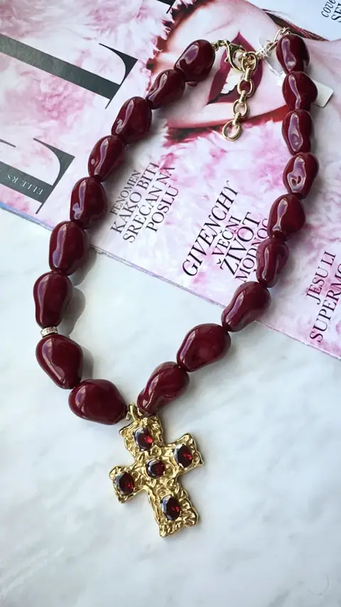
Колье из майорки «Бургунди» с крестом5 400 ₽ · В наличии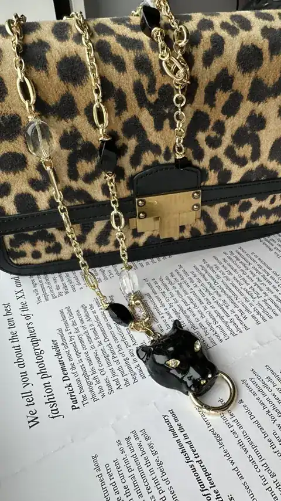
Сотуар из натуральных камней5 900 ₽ · В наличии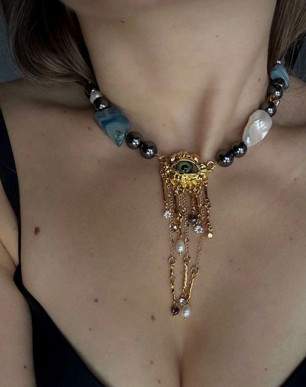
Колье из агата, жемчуга и гематита4 200 ₽ · В наличии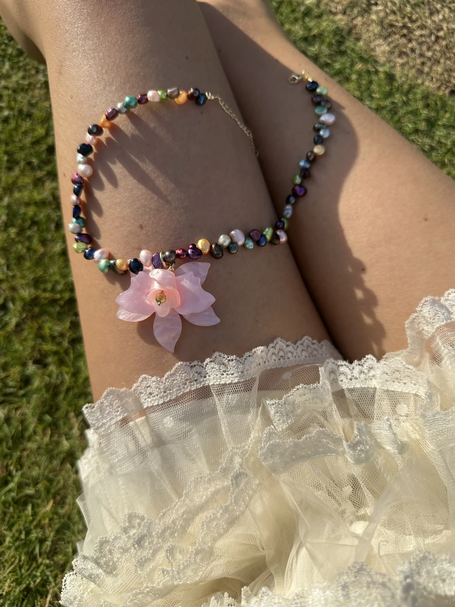
Чокер из тонированного жемчуга3 600 ₽ · В наличии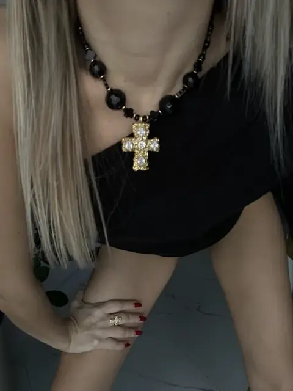
Колье из чёрного агата с крестом5 400 ₽ · В наличии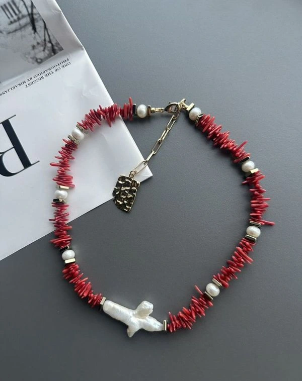
Колье из коралла и жемчугаЦена по запросу · В наличии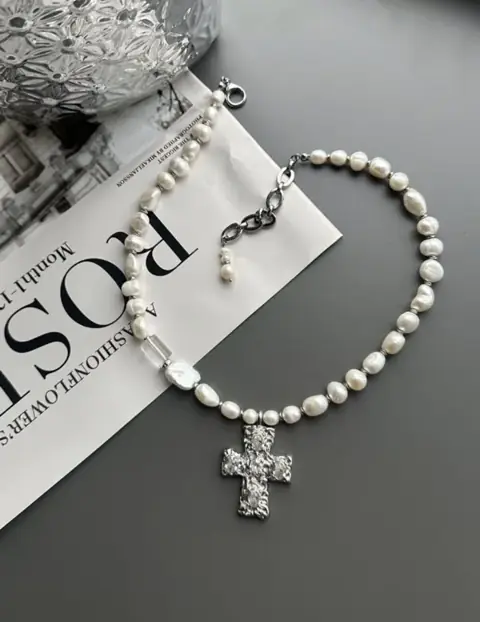
Колье из натурального жемчуга с крестом6 300 ₽ · В наличии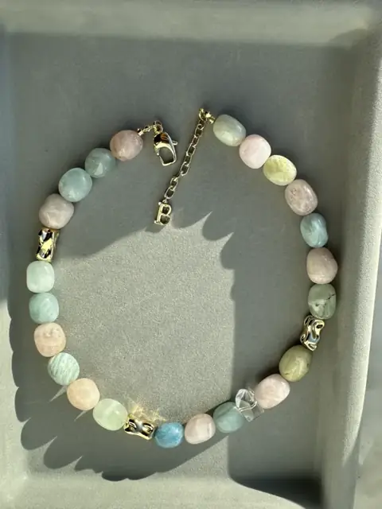
Колье «Пастель» из берилла7 100 ₽ · В наличии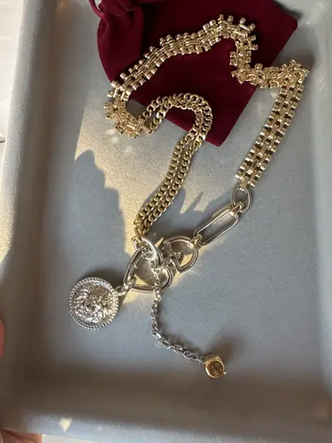
Колье-лариат «Лев» из цепей3 700 ₽ · В наличии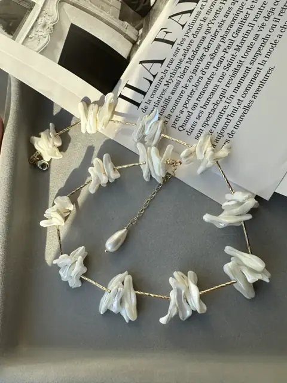
Колье из жемчуга-лепестковЦена по запросу · В наличии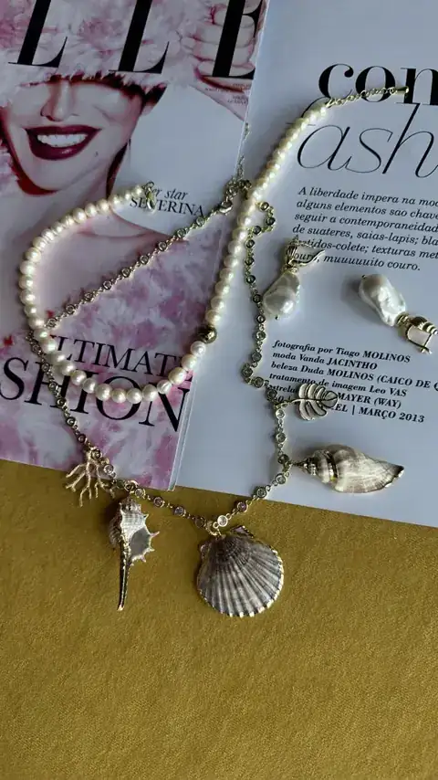
Колье «Ривьера» с ракушками3 700 ₽ · В наличии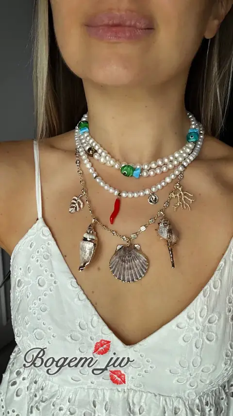
Чокер из жемчуга с цветными бусинамиЦена по запросу · В наличии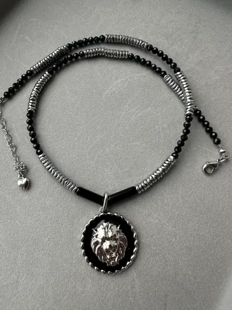
Колье «Лев» из чёрных камнейЦена по запросу · В наличии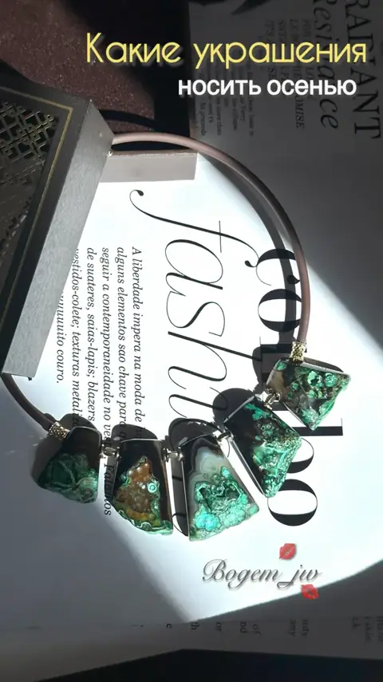
Колье-воротник с зелёным камнемЦена по запросу · В наличии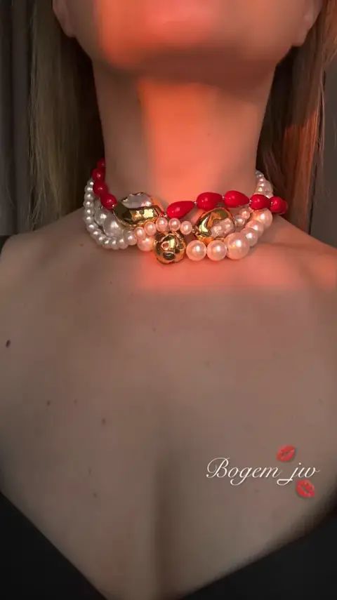
Чокер из жемчуга и кораллаЦена по запросу · В наличии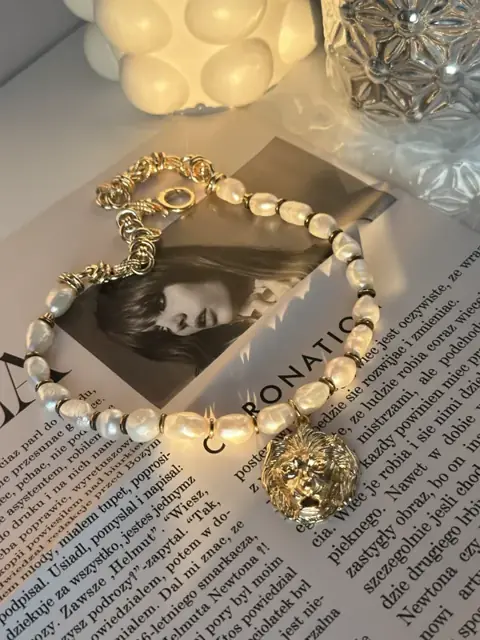
Колье из жемчуга с медальоном «Лев»4 600 ₽ · В наличии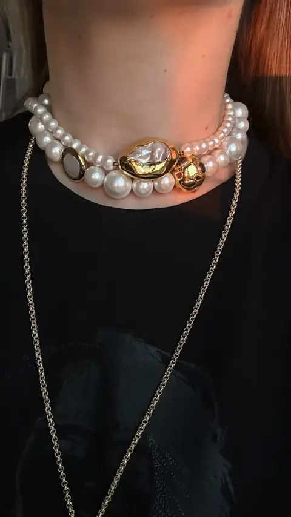
Двойной чокер из жемчуга с золотыми вставкамиЦена по запросу · В наличии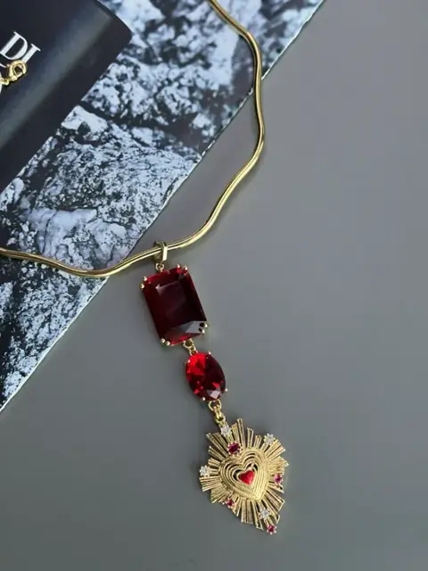
Колье «Пламенное сердце»Цена по запросу · В наличии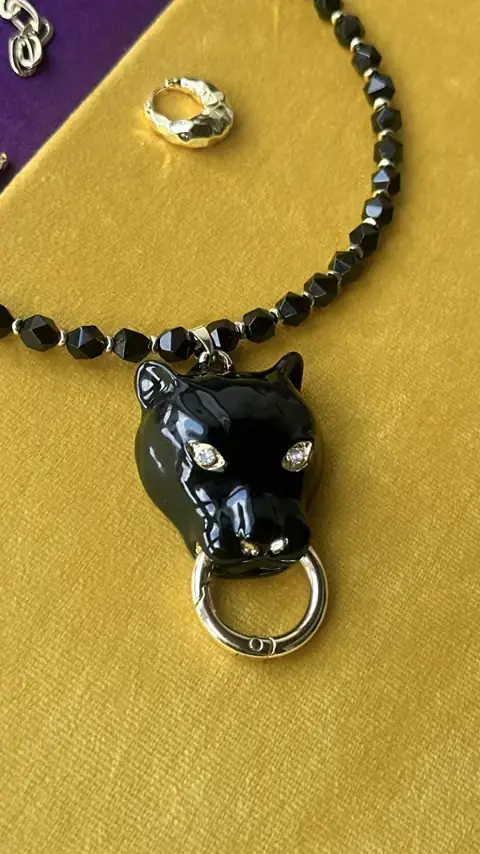
Колье «Пантера» из чёрных бусинЦена по запросу · В наличии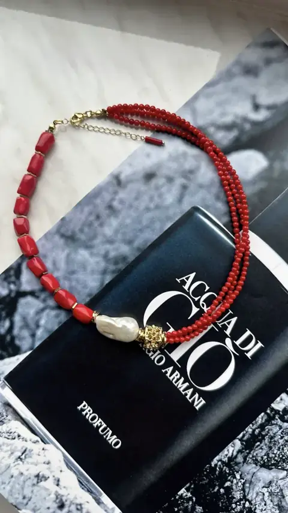
Колье из красного коралла с барочной жемчужинойЦена по запросу · В наличии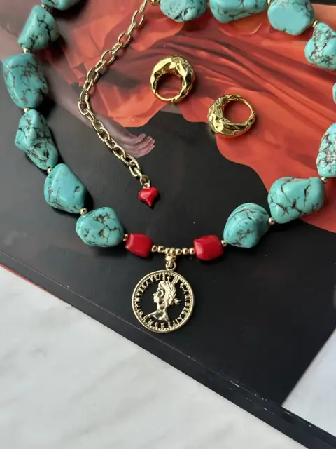
Колье «Бирюзовый берег» с монетойЦена по запросу · В наличии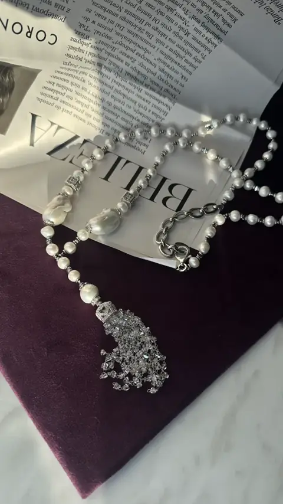
Длинное колье из жемчуга с кистьюЦена по запросу · В наличии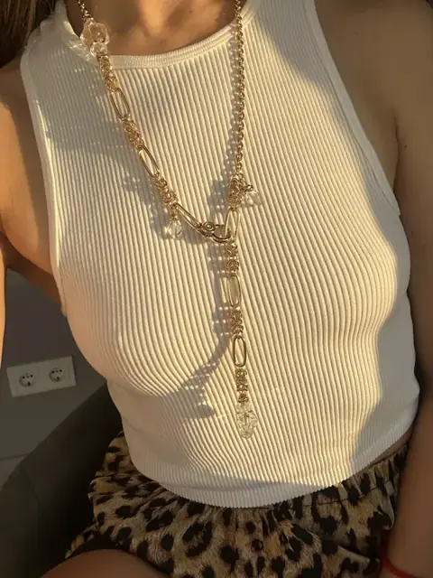
Колье-лариат из цепей с кристалламиЦена по запросу · В наличии